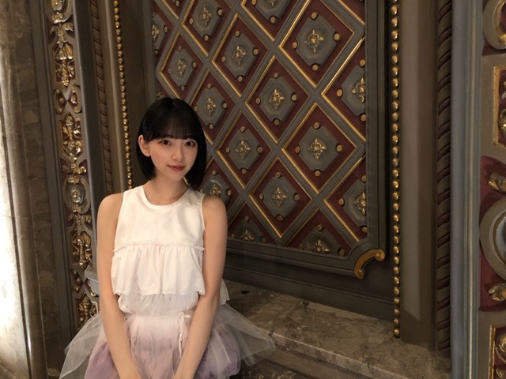
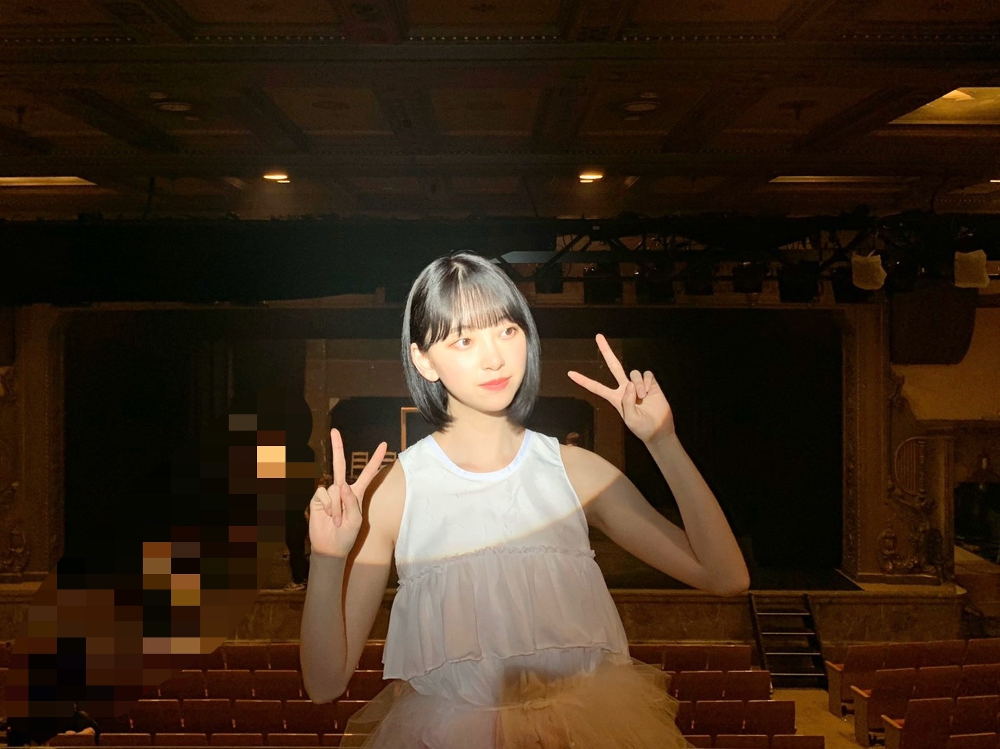

2020/0908Tueゆっくりと咲く花
いよいよ
ALL MV COLLECTION 2～あの時の彼女たち～
が明日発売になりますね^ - ^
フラゲした方もいますか？
メイキングはもちろん、今回のMV集のために
撮影された2期生曲 " ゆっくりと咲く花 "
のMVを早くみなさんに見ていただきたいです


1カットでミュージカルぽく撮影しました！
楽しかったなぁ
振り付けも歌詞も音も衣装も
繊細さと芯の強さが現れていて
2期生らしいなぁと思いました
たくさんの想いが詰まったMVです
他のMVももちろん思い入れしかないです
わたしも早くお家で観たいなぁ
感想お聞かせください^ - ^
ではでは
2020/09/08 20:00
コメント(260)
みおな、こんばんは！更新ありがとう。 近況報告ありがとうございます。 では、毎日みおなに良いこと沢山ありますように！ おやすみおな！！
未央奈さんに質問！！！
私も最近、自分磨きを頑張っているのですが、未央奈さんは美容にとても詳しいと思うので、聞きます！！
未央奈さんの手が、めっちゃ綺麗だなっていつも思うんですけど、特に指、爪とかは、長細くてツヤツヤで…
何か爪のお手入れとかあったら教えて欲しいです！！！
あと、『ゆっくりと咲く花』、あの優しくて柔らかなメロディーが大好きです！二期生のみんなの絆や愛を感じます。
ほんとうに大好きです！！！
これからも体調気をつけて頑張って下さい！
私も最近、自分磨きを頑張っているのですが、未央奈さんは美容にとても詳しいと思うので、聞きます！！
未央奈さんの手が、めっちゃ綺麗だなっていつも思うんですけど、特に指、爪とかは、長細くてツヤツヤで…
何か爪のお手入れとかあったら教えて欲しいです！！！
あと、『ゆっくりと咲く花』、あの優しくて柔らかなメロディーが大好きです！二期生のみんなの絆や愛を感じます。
ほんとうに大好きです！！！
これからも体調気をつけて頑張って下さい！
ミュージカルっぽく撮影した写真！
ミュージカルっぽいっ！！
何の役？蟹？？
ﾀﾞﾌﾞﾙﾋﾟｰｽ(oﾟ∀ﾟ)=○ )´3｀)∴
)´3｀)∴
ミュージカルっぽいっ！！
何の役？蟹？？
ﾀﾞﾌﾞﾙﾋﾟｰｽ(oﾟ∀ﾟ)=○
フラゲしたよ。
一枚目から見てるよぉ。
あの教室とか、ハルジオンの頃の未央奈ってめっちゃ可愛いって感じなんだよなぁ。今は綺麗が前面に出てきてる感じだけど、時折あの可愛さが出るよね。
ちょうど、アンダーから選抜に帰ってきた頃で、未央奈ちゃんを推し出した頃だからじっくり最初から見ていくよぉ。
インフルエンサーから、いつかできるの頃から綺麗に変貌していったかなぁって思ってます。
一枚目から見てるよぉ。
あの教室とか、ハルジオンの頃の未央奈ってめっちゃ可愛いって感じなんだよなぁ。今は綺麗が前面に出てきてる感じだけど、時折あの可愛さが出るよね。
ちょうど、アンダーから選抜に帰ってきた頃で、未央奈ちゃんを推し出した頃だからじっくり最初から見ていくよぉ。
インフルエンサーから、いつかできるの頃から綺麗に変貌していったかなぁって思ってます。
未央奈♡
「ゆっくりと咲く花」
ありがとう♡♡
46時間TVで聴いたときより
さらに華やかで誇らしく
2期生らしい、健やかな印象で。
ますます好きになりました。
やっぱり、1カットなんだね。
スタートからの未央奈の表情の変化
純やれなちの物語性あるダンス
まいちゅんのロングカット
蘭世さんの笑顔
花咲く瞬間のみり愛のダンス
小演劇を観たような気持ちに。
バルコニー席から
みんなが笑顔で舞台を観ているラスト。
ホントに素晴らしい。
これからも大切な花であり続けてほしいな。
さくちゃんがCMで言ってた通り
永久保存版だな！
またね(^^)
元気で。
浪速の商人（あきんど）
「ゆっくりと咲く花」
ありがとう♡♡
46時間TVで聴いたときより
さらに華やかで誇らしく
2期生らしい、健やかな印象で。
ますます好きになりました。
やっぱり、1カットなんだね。
スタートからの未央奈の表情の変化
純やれなちの物語性あるダンス
まいちゅんのロングカット
蘭世さんの笑顔
花咲く瞬間のみり愛のダンス
小演劇を観たような気持ちに。
バルコニー席から
みんなが笑顔で舞台を観ているラスト。
ホントに素晴らしい。
これからも大切な花であり続けてほしいな。
さくちゃんがCMで言ってた通り
永久保存版だな！
またね(^^)
元気で。
浪速の商人（あきんど）
ブログ更新ありがとう！
フラゲできなかったけど明日楽しみにしてます！
「ゆっくりと咲く花」早くフルでみたいな～
フラゲできなかったけど明日楽しみにしてます！
「ゆっくりと咲く花」早くフルでみたいな～
未央奈ちゃんブログ更新ありがとう！！
フラゲできてないからいつ届くか分からないけど届いたら感想お送りします！
2期生ライブで披露してくれた時みんなの表情、声、気持ちがすごく籠っていてそれに歌詞がぴったりでひとつひとつの動きもすごく素敵でしぜんと泣けてきたのを覚えています。
2期生だからこそ表現できる歌だと思うし、2期生だから感動できるんだなぁって思います。
衣装も素敵です！淡いピンクのグラデーションのフリルだからふわっとしていて未央奈ちゃんにピッタリです⸜❤︎⸝
はやくみたーーい！！
いつもありがとうございます
だいすき！
フラゲできてないからいつ届くか分からないけど届いたら感想お送りします！
2期生ライブで披露してくれた時みんなの表情、声、気持ちがすごく籠っていてそれに歌詞がぴったりでひとつひとつの動きもすごく素敵でしぜんと泣けてきたのを覚えています。
2期生だからこそ表現できる歌だと思うし、2期生だから感動できるんだなぁって思います。
衣装も素敵です！淡いピンクのグラデーションのフリルだからふわっとしていて未央奈ちゃんにピッタリです⸜❤︎⸝
はやくみたーーい！！
いつもありがとうございます
だいすき！
みおちゃーん。
MV集、まだゲットできてない(´；ω；｀)
ゆっくりと咲く花、すごく楽しみしてるのよん。
他の最近観てないMVとかも見返すとその時の色んな気持ちを思い出しそうだなぁ。
また感想送るね！
MV集、まだゲットできてない(´；ω；｀)
ゆっくりと咲く花、すごく楽しみしてるのよん。
他の最近観てないMVとかも見返すとその時の色んな気持ちを思い出しそうだなぁ。
また感想送るね！
一番最初に「ゆっくりと咲く花」見ました。
ところどころで見られる2期生の笑顔が最高でした。
ところどころで見られる2期生の笑顔が最高でした。
未央奈ちゃんこんばんは。
今日フラゲしたよ！でも今夜はまだ観れそうにないので、明日ゆっくり観ようと思ってます。これだけ未央奈ちゃんが勧めてくれてるし、ほかの曲と違って初めて観る曲なので、まずは「ゆっくりと咲く花」を観てみようかな。
今日フラゲしたよ！でも今夜はまだ観れそうにないので、明日ゆっくり観ようと思ってます。これだけ未央奈ちゃんが勧めてくれてるし、ほかの曲と違って初めて観る曲なので、まずは「ゆっくりと咲く花」を観てみようかな。
未央なさん今晩は、久しぶりにコメントしますね今日の会社の帰りに、乃木坂46のMVを買って来ました、前の最初のMVはDVDでしたが、今回のMVはブルーレイに為りました、これから見て見ようと思います、自分がカラオケで歌って居るMVはどんな感じかなと期待して居ます、先週末にカラオケに行って何時もの様に、あらかじめ語られるロマンスとアナスターシヤを歌って居る時に部屋を覗かれてしまいました、これからも応援しています。
ゆっくりと咲く花のMV楽しみにしてるね
早くみたい〜
早くみたい〜
早くフルで見たい
まったく〜もう❗うちの〜みおな♪(*´ω｀*)Wピース ✌️なんて❗お子さま☺️
みおたんきゃわたん♡♡♡
いいお写真ですね☆
今日の9時過ぎには届きましたよ♪
今日の9時過ぎには届きましたよ♪
未央奈ちゃん今日もブログ更新ありがとー
ゆっくりと咲く花、幻の2期生ライブでしか観たことなかったからMVになってまた観れるだなんてめっちゃ嬉しい‼️
買ってもらいたいな〜
衣装上の方見ただけだけど絶対に可愛い‼️
ファイティン‼️
ゆっくりと咲く花、幻の2期生ライブでしか観たことなかったからMVになってまた観れるだなんてめっちゃ嬉しい‼️
買ってもらいたいな〜
衣装上の方見ただけだけど絶対に可愛い‼️
ファイティン‼️
未央奈更新ありがとう！
cmも未央奈の引っ越しver見たよ！なんかエモすぎて感動した
スポットライトが似合う美しい女性だ
cmも未央奈の引っ越しver見たよ！なんかエモすぎて感動した
スポットライトが似合う美しい女性だ
未央奈こんばんわー
ブログ更新嬉しいよ〜
もちろんフラゲしたよォ〜乃木坂もだし2期生もだし未央奈の良さが詰まってるからね最高
ブログ更新嬉しいよ〜
もちろんフラゲしたよォ〜乃木坂もだし2期生もだし未央奈の良さが詰まってるからね最高
堀ちゃん、MV集楽しみにしてるよ。
見たら、感想を書くね！
オオカミくん＼(^-^)／
見たら、感想を書くね！
オオカミくん＼(^-^)／
こんばんは 未央奈
未央奈
ブログ更新お疲れ様m(_ _)m
感想かぁ(´・ω・｀)
送れるかなぁ？
おやすみおな
良い夢を
また明日
ブログ更新お疲れ様m(_ _)m
感想かぁ(´・ω・｀)
送れるかなぁ？
おやすみおな
良い夢を
また明日
先週末の工事中での
MVのエピソード面白かったな^○^
それも踏まえてMV集
お楽しみです
では
たくさんの苦労を乗り越えてきた二期生の楽曲。泣かないわけがない
ブログ更新ありがとうございます
明日が念願のALLMVリリースですね
予約しましたよ!!
とても楽しみです♥
しかも、卒業メンバーも入っているので
めちゃくちゃ嬉しいです
未央奈が出ているところの
見どころを次の更新で上げて欲しいです
お願いしますw
次の更新待ってま〜す
明日が念願のALLMVリリースですね
予約しましたよ!!
とても楽しみです♥
しかも、卒業メンバーも入っているので
めちゃくちゃ嬉しいです
未央奈が出ているところの
見どころを次の更新で上げて欲しいです
お願いしますw
次の更新待ってま〜す
ゆっくりと咲く花嬉しすぎる！
楽しみにしてます!
未央奈ちゃんブログ更新ありがとう！
さくらちゃんとあやめちゃんとでんちゃんと同じ愛知県出身の愛知の覇王です！
蓮加ちゃんと同じ高校2年生です！
いよいよ明日、ミュージック・ビデオコレクション2が発売されるね！
でも、僕は今日、セブンネットでゲットしました！
ゆっくりと咲く花、Route246のフルバージョンのミュージック・ビデオがすごい楽しみです！
後で見ますね！
感想も伝えますね！
これからもずっと応援するので、頑張ってください！
さくらちゃんとあやめちゃんとでんちゃんと同じ愛知県出身の愛知の覇王です！
蓮加ちゃんと同じ高校2年生です！
いよいよ明日、ミュージック・ビデオコレクション2が発売されるね！
でも、僕は今日、セブンネットでゲットしました！
ゆっくりと咲く花、Route246のフルバージョンのミュージック・ビデオがすごい楽しみです！
後で見ますね！
感想も伝えますね！
これからもずっと応援するので、頑張ってください！
ゴメンなさい～
MV集まだGETできてないのです…！
観たら感想、絶対伝えるね！
みおなも色んな想いがあるなか
ずっと諦めないで頑張ってきた
自分も仕事、頑張ります！
いつも力をくれて本当にありがとう
MV集まだGETできてないのです…！
観たら感想、絶対伝えるね！
みおなも色んな想いがあるなか
ずっと諦めないで頑張ってきた
自分も仕事、頑張ります！
いつも力をくれて本当にありがとう
ヤッホー未央奈ブログ更新ありがとー❗明日のMV 集とても発売が楽しみです、、幻の2期生ライブで歌われた(ゆっくりと咲く花)とても楽しみにしています❗健康ですごしましよう❗おやすみなさい❗
みおな
こんばんは
続けてコメントしてます
ALL MV COLLECTION 2ついに発売ですね
衝撃の事実ですが、まだ予約もしてなくて買えてないです
まいやんの卒業グッズ（配信ライブチケット費用）みおなの生誕Tシャツと、生写真と戦闘が相次ぎ、財布が攻撃を受けております
ごめんね
ただ、必ず買うので感想はもう少し先で、コメントできたらなと思います
ゆっくりと咲く花は、2期生ライブで1回聴いただけで忘れかけてるので、もっとしっかり聴きたいです
ROUTE 246もカッコいいから、MV気になります
シンクロニシティは、MV撮影が家の近所なので、思い入れがあります
歌はあの時はこうだったとか、その時の思い出を思い出させてくれるので、いい物ですね
必ず買うからしばしお待ちを！
ありがとうございました
こんばんは
続けてコメントしてます
ALL MV COLLECTION 2ついに発売ですね
衝撃の事実ですが、まだ予約もしてなくて買えてないです
まいやんの卒業グッズ（配信ライブチケット費用）みおなの生誕Tシャツと、生写真と戦闘が相次ぎ、財布が攻撃を受けております
ごめんね
ただ、必ず買うので感想はもう少し先で、コメントできたらなと思います
ゆっくりと咲く花は、2期生ライブで1回聴いただけで忘れかけてるので、もっとしっかり聴きたいです
ROUTE 246もカッコいいから、MV気になります
シンクロニシティは、MV撮影が家の近所なので、思い入れがあります
歌はあの時はこうだったとか、その時の思い出を思い出させてくれるので、いい物ですね
必ず買うからしばしお待ちを！
ありがとうございました
未央奈めっちゃ可愛い！
未央奈さんブログ更新してくれてありがとうございます。今日も忙しいのにモバメもらっていてありがとうございます。MVはお金が無いから年末中古になるまで待ちます。未央奈さんのボブヘアーとかロングヘアースタイル可愛い❤️です。しかしモバメもらっている人に未央奈さんはブログ更新が多いので｢ブログ書いたから見て」という気配りが足りないけど推しなので癒される。これからもコロナと熱中症に気を付けて頑張って下さい。
未央奈、ブログ更新アリガトウ!
これから予約するからもう少しの我慢だ!
今から楽しみです!
またヨロシクね
これから予約するからもう少しの我慢だ!
今から楽しみです!
またヨロシクね
こんばんは。
白い衣装、サンスターのCMを思い出しました☺️
素敵なオフショットですね。
昔の乃木坂を存分に振り返ろうと思います。
白い衣装、サンスターのCMを思い出しました☺️
素敵なオフショットですね。
昔の乃木坂を存分に振り返ろうと思います。
楽しみにしてけよ～( ´∀`)
明日
明日
こんばんは。セブンだよ(ฅ'ω'ฅ)♪
今日も1日お疲れさまでした
2期生曲はどれも大好き
特にアナスターシャは最高です！
曲もダンスもMVも全部好き
だからMV集めっちゃ観たいんだけど
資金不足で買えません
ぴえん超えてぱおん(T ^ T)
写真はボブなのかな？
ショートなのかな？
どっちかわかんないけどその長さが1番似合う
めっちゃかわいいよ♡
では、明日も1日楽しんで生きましょうd(@^∇ﾟ)/ﾌｧｲﾄｯ♪
おやすみおな☪️
今日も1日お疲れさまでした
2期生曲はどれも大好き
特にアナスターシャは最高です！
曲もダンスもMVも全部好き
だからMV集めっちゃ観たいんだけど
資金不足で買えません
ぴえん超えてぱおん(T ^ T)
写真はボブなのかな？
ショートなのかな？
どっちかわかんないけどその長さが1番似合う
めっちゃかわいいよ♡
では、明日も1日楽しんで生きましょうd(@^∇ﾟ)/ﾌｧｲﾄｯ♪
おやすみおな☪️
未央奈～ こんにちは
連日のブログ更新 ありがとうございます。
さぁ、いよいよですね。５年ぶりのMV集の発売、やはり一番楽しみなのは「ゆっくりと咲く花」のフル版です。感想はまた明日改めて書きます。
「台風一過」という言葉がありますが、どうも簡単には涼しくならないようです。季節の変わり目、体調管理にはくれぐれも気をつけてくださいね。
連日のブログ更新 ありがとうございます。
さぁ、いよいよですね。５年ぶりのMV集の発売、やはり一番楽しみなのは「ゆっくりと咲く花」のフル版です。感想はまた明日改めて書きます。
「台風一過」という言葉がありますが、どうも簡単には涼しくならないようです。季節の変わり目、体調管理にはくれぐれも気をつけてくださいね。
ブログ更新ありがとう
もちろん買ったよー！！！
楽しみすぎて早く明日にならないかなぁと思ってます笑
明日も頑張ろう！！
れお
もちろん買ったよー！！！
楽しみすぎて早く明日にならないかなぁと思ってます笑
明日も頑張ろう！！
れお
MV集見ました
ゆっくりと咲く花のMVすごくよかったです
ウルっときてしまいました
何度も見たいと思います
素敵な作品をありがとう
ゆっくりと咲く花のMVすごくよかったです
ウルっときてしまいました
何度も見たいと思います
素敵な作品をありがとう
未央奈ー
早速予約したのが届いて、すぐに三枚目、、ゆっくりと咲く花から観させていただきました。
途中から、ん？1カットでいくのかー？ってドキドキしながら観てたけど、本当に1カットがんばったねーー！！
最初の未央奈の涙からもうこっちの涙腺も崩壊に向かって、楽曲の良さと、二期生の凛とした表情、そして今までの二期生の歩みを感じながら涙が自然と流れてましたよ。
二期生は乃木坂にとって本当に尊い存在！もちろん他の期もそれぞれの役割や良さがあって大好きだし大切な存在なんだけど、一期生と共に乃木坂の基礎を作り上げてきて、いろんな苦労もありながら、日の当たらない場所でも本当にゆっくりと花ひらいて、気がついたらなくてはならない大きな存在になっていたよね。
MV中のみんなが美しかったよ。
幻の二期生ライブの時に残念ながら参加できなかったきいちゃんもしっかりいて、でもその時にいた琴子ちゃんはいなくて、、、。その辺りもなんかグッとくるものがあったし、もう、いろんなシーンを思い出して噛みしめられたよ。
そして、ラストシーンも良いよね！！
なんか二期生が乗り越えて今ここにいる感じがして、とても感動しました！ ありがとう！
そして、アナスターシャ！！
いつも音楽は聴いているんだけどあの映像と共に聴くとまた一味違うというか、よりこの曲が好きになります。
未央奈はもちろん、二期生の絆の強さ、優しさ、真剣さ、明るさがめちゃめちゃ伝わってきて、なんか希望が持てます！
本当に素晴らしい作品をありがとう！！！！
まだまだ書き足りないくらいだけど、他のMVもゆっくり鑑賞させていただくことにします！
早速予約したのが届いて、すぐに三枚目、、ゆっくりと咲く花から観させていただきました。
途中から、ん？1カットでいくのかー？ってドキドキしながら観てたけど、本当に1カットがんばったねーー！！
最初の未央奈の涙からもうこっちの涙腺も崩壊に向かって、楽曲の良さと、二期生の凛とした表情、そして今までの二期生の歩みを感じながら涙が自然と流れてましたよ。
二期生は乃木坂にとって本当に尊い存在！もちろん他の期もそれぞれの役割や良さがあって大好きだし大切な存在なんだけど、一期生と共に乃木坂の基礎を作り上げてきて、いろんな苦労もありながら、日の当たらない場所でも本当にゆっくりと花ひらいて、気がついたらなくてはならない大きな存在になっていたよね。
MV中のみんなが美しかったよ。
幻の二期生ライブの時に残念ながら参加できなかったきいちゃんもしっかりいて、でもその時にいた琴子ちゃんはいなくて、、、。その辺りもなんかグッとくるものがあったし、もう、いろんなシーンを思い出して噛みしめられたよ。
そして、ラストシーンも良いよね！！
なんか二期生が乗り越えて今ここにいる感じがして、とても感動しました！ ありがとう！
そして、アナスターシャ！！
いつも音楽は聴いているんだけどあの映像と共に聴くとまた一味違うというか、よりこの曲が好きになります。
未央奈はもちろん、二期生の絆の強さ、優しさ、真剣さ、明るさがめちゃめちゃ伝わってきて、なんか希望が持てます！
本当に素晴らしい作品をありがとう！！！！
まだまだ書き足りないくらいだけど、他のMVもゆっくり鑑賞させていただくことにします！
こんばんは。ブログ更新ありがとうございます。
MV集、フラゲしたけど、まだ開封して無いです。これからゆっくりと見ます。ゆっくりと咲く花、真っ先に見たいですね。配信で聞いてから、ずっと待ってました。できればシングル化して欲しいです。ハイレゾで販売してくれる尚良いです。よろしくお願いします。
ではまた。
MV集、フラゲしたけど、まだ開封して無いです。これからゆっくりと見ます。ゆっくりと咲く花、真っ先に見たいですね。配信で聞いてから、ずっと待ってました。できればシングル化して欲しいです。ハイレゾで販売してくれる尚良いです。よろしくお願いします。
ではまた。
未央奈！
俺も早くみたい！
では
俺も早くみたい！
では
未央奈ブログ更新ありがとう。MV集に入っている
ゆっくりと咲く花早く見たいよ。
その前にMV集が買えなくて困ってる。でも頑張って買って見るね
ゆっくりと咲く花早く見たいよ。
その前にMV集が買えなくて困ってる。でも頑張って買って見るね
堀ちゃんの黒髪姿とお肌が綺麗で可愛い\(//∇//)\
好きよ〜(●´ω｀●)
発売日楽しみ
好きよ〜(●´ω｀●)
発売日楽しみ
ゆっくりと咲く花MV見ました。
曲を聞いて約半年前の幻の2期生ライブで流れた瞬間を鮮明に思い出したな〜久しぶりに聞いたけどやっぱりいい曲！
そしてMVの2期生みんな表情がすごく素敵だった！曲の世界観がすごく伝わってきて曲だけ聞くより歌詞がすごく入ってきた。これから何回も見るね！
あと表題曲のメイキング集も見たんだけど、ハルジオンの頃から現在までの未央奈が見れてすごく楽しかった！時間経つのが早いようなゆっくりなような不思議な気持ちになったよ〜笑これからも未央奈の姿見るの楽しみにしてます！あとこの髪型ものすごく好きです！！
曲を聞いて約半年前の幻の2期生ライブで流れた瞬間を鮮明に思い出したな〜久しぶりに聞いたけどやっぱりいい曲！
そしてMVの2期生みんな表情がすごく素敵だった！曲の世界観がすごく伝わってきて曲だけ聞くより歌詞がすごく入ってきた。これから何回も見るね！
あと表題曲のメイキング集も見たんだけど、ハルジオンの頃から現在までの未央奈が見れてすごく楽しかった！時間経つのが早いようなゆっくりなような不思議な気持ちになったよ〜笑これからも未央奈の姿見るの楽しみにしてます！あとこの髪型ものすごく好きです！！
堀ちゃん、こんばんは！
もっちろんさっき帰り際にセブンで受けとってきました！
もう、ついに手に入ったって、気分があがりっぱなしです。
夜通しみちゃおうっと。
また感想コメントするね！
もっちろんさっき帰り際にセブンで受けとってきました！
もう、ついに手に入ったって、気分があがりっぱなしです。
夜通しみちゃおうっと。
また感想コメントするね！
ブログ更新ありがとう！
セブンで受け取ったよ！！！
家でゆっくり見ます！感想待ってて〜
セブンで受け取ったよ！！！
家でゆっくり見ます！感想待ってて〜
こんばんみーお♪
ブログありがとう！
2ndMV集、フラゲしたけど
結局、観られたのは日付けが変わってからだった〜
『ゆっくりと咲く花』
凄いね！ほんまに、1カットの長まわしだし、
いきなりのみおの涙目に引き込まれて
そのままの流れの中で
みり愛と純奈の鏡の演出から
その移動も含めて「えっ！？」
ってなって、もしかして、このまま繋げ乍ら
演出していくのか！？ってなった。
そして、照明の切り替え、、
途中、読んでいたのは脚本なのかな？
メンバーがそれぞれの時間を歩んで、、
衣装の変化も加わり花の開花を表現、
積み重ねたものを花びらに例え
それが花ひらく様を現した振付け、、
最後は、皆んなで客観視しながらの永久ループ。。。
凄い。。
濃い。
昔、ゴダールの映画に魅了されていた頃の
自分の感覚を思い出した。
濃い作品には、揺さぶられるものがあるなぁ。。
うん。今宵は、もう寝る。
何か、懐かしく心地良い感覚。。
わたる⊿
ブログありがとう！
2ndMV集、フラゲしたけど
結局、観られたのは日付けが変わってからだった〜
『ゆっくりと咲く花』
凄いね！ほんまに、1カットの長まわしだし、
いきなりのみおの涙目に引き込まれて
そのままの流れの中で
みり愛と純奈の鏡の演出から
その移動も含めて「えっ！？」
ってなって、もしかして、このまま繋げ乍ら
演出していくのか！？ってなった。
そして、照明の切り替え、、
途中、読んでいたのは脚本なのかな？
メンバーがそれぞれの時間を歩んで、、
衣装の変化も加わり花の開花を表現、
積み重ねたものを花びらに例え
それが花ひらく様を現した振付け、、
最後は、皆んなで客観視しながらの永久ループ。。。
凄い。。
濃い。
昔、ゴダールの映画に魅了されていた頃の
自分の感覚を思い出した。
濃い作品には、揺さぶられるものがあるなぁ。。
うん。今宵は、もう寝る。
何か、懐かしく心地良い感覚。。
わたる⊿
堀さん、こんばんは。今日も美人さんですね。
ＭＶ集注文したので、見たら感想書きます。曲だけじゃなく振り付けや衣装にも注目したいと思います。
ＭＶ集注文したので、見たら感想書きます。曲だけじゃなく振り付けや衣装にも注目したいと思います。


乃木中の未央奈面白かったよ笑笑